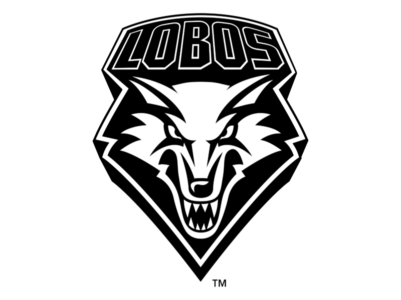

Los Lobos
|  |
Los lobos forman parte de la mitología de muchas civilizaciones a lo largo de varias epocas a sido adorado y temido ya sea en roma donde una loba amamanto a los fundadores del mayor imperio del mundo o en la nordica donde un gran lobo (fenrir) causara la destruccion del mundo en este apartado se explicara las diferentes leyendas de este animal... |
A cerca de
En esta página se encuentra información correspondiente a la tribu que se escogio para representar al grupo de ingenieria de software 3
Aun en construccion